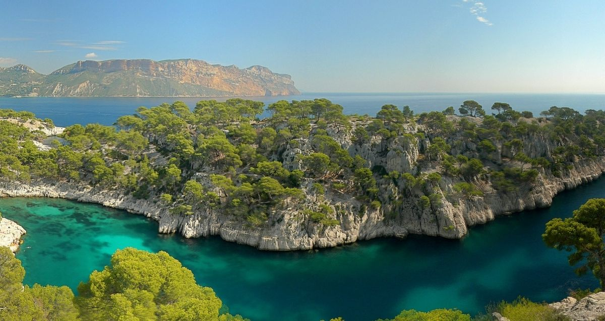
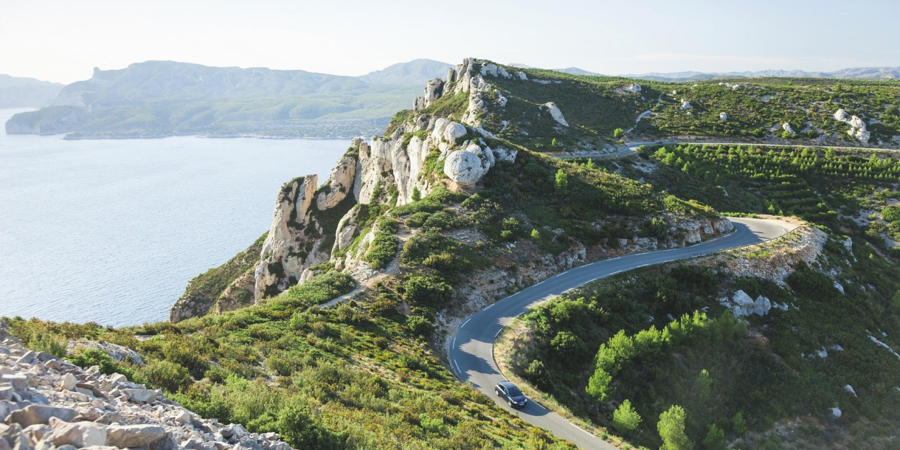
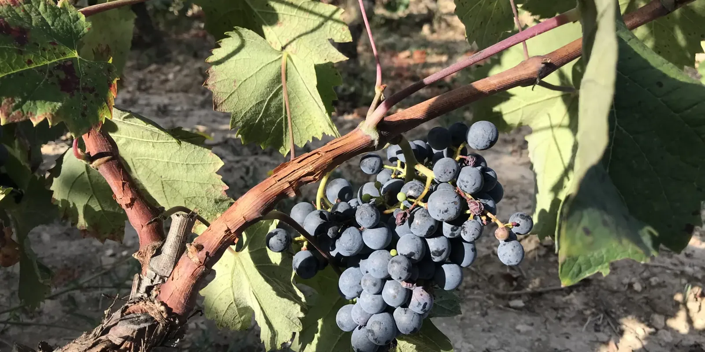

Anchored on three Michelin stars above the bay. Two days built around one restaurant, two hard constraints, and one continuous arc from the clifftop to the dinner table.
Two constraints govern this weekend. Miss either and you lose the anchor event or the morning entirely.
The terrace sits directly above the Bay of Cassis, Cap Canaille's red cliffs rising behind it — the same cliff you'll have driven along at golden hour, now framing the dining room below. Dimitri and Marielle Droisneau have held a star here since 2014. Menus change daily around Mediterranean and garden produce.[2] Sommelier Lionel Legoinha holds 550+ vintages — including the Cassis AOC whites you'll have tasted earlier in the afternoon.[5]
Reserve a table →“Qu'a vist Paris, se noun a vist Cassis, n'a rèn vist.”
Frédéric Mistral — who has seen Paris and not Cassis has seen nothingCassis SNCF is 3 km from the centre — shuttle or taxi from the station.[14] The port is the town: ochre and pastel façades, fishing boats wedged beside yachts, terraces filling as the light drops behind Cap Canaille. Walk it slowly. Wednesday and Friday mornings: Provençal market on Place Baragnon. This first evening: a glass of Cassis AOC white on a harbour terrace while watching the boats come in.

Park entrance is 30 min on foot from the town centre. The classic GR51/98 (red-and-white waymarks) starts at Port-Miou.[12] Continue to Port-Pin in 2.3 km / 30 min — a sand-and-pebble cove, easy terrain, swimmable.[13] Another 1.5 km brings you to En-Vau — the iconic postcard cove; the descent is steep, hands-on, and worth every metre. No reservation needed for any Cassis-side calanque.[9]

The D141 runs ~15–17 km between Cassis and La Ciotat over Cap Canaille, cresting at La Grande Tête (~399 m).[10] Allow 30 min non-stop or an hour to use the free roadside belvederes. Time the drive so you reach La Grande Tête as the light turns. From those belvederes you look directly down over Anse de Corton — the exact terrace where you'll dine in two hours. The drive and the dinner form a single continuous arc: see the view from 399 m above, then eat within it. Drive this Friday or Saturday — the road is pedestrian-only on Sundays in season and closes without notice on windy days.[11]

Cassis AOC is a crisp, mineral, faintly saline white wine — confusingly nothing to do with blackcurrant. Built on Marsanne and Clairette, the classic match for bouillabaisse.[6] Clos Sainte Magdeleine (terraced organic vines on the sea cliffs; Apr–Sep, Mon–Sat, €10 guided tasting)[15] is the postcard estate. Château de Fontcreuse has a tasting room in Cassis itself.[16] Then: 19:30 at Anse de Corton — service runs to 20:45.[3] The sommelier pours the same appellation you just visited; the wine thread that runs through the day closes at the dinner table.
The Route des Crêtes belongs to walkers today — no loss if you drove it yesterday. The port in morning light, a second wine estate, a coffee on a shaded square. If the fire grade is green: one more calanque. If not, Les Bateliers de Cassis runs boat tours year-round — even on red days, even on Sundays — from €21 for an hour through three coves up to €33 for the full nine-calanque run.[8] Tickets at the harbour, 30 min before departure.